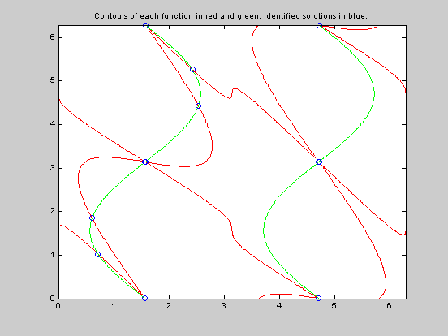

RMSEARCH demos
Contents
Find all zeros of besselj(2,x) betweeen x=0 and x=50.
Note that x0 is actually ignored for the univariate optimizers fzero and fminbnd, as long as bounds are provided. Those bounds provide the information on where to search. Once the sample points are generated, rmsearch understands that fzero really cares most about where zero crossings occur, so it looks for each such crossing.
% Generate a plot of the sample points and the solutions found. fun = @(x) besselj(2,x); [xfinal,ffinal,exitflag,xstart] = rmsearch(fun,'fzero',... 10,0,50,'initialsample',500,'plot','on') % On 1-d problems, rmsearch with fzero looks for zero crossings % in its samples, starting up the solver at each such crossing.
xfinal =
0
5.1356
8.4172
11.62
14.796
17.96
21.117
24.27
27.421
30.569
33.717
36.863
40.008
43.153
46.298
49.442
ffinal =
0
-1.9025e-16
3.314e-16
-8.7517e-17
-1.8952e-16
-1.3598e-16
-1.1319e-15
8.4254e-16
-6.4901e-16
2.8633e-16
-6.3256e-17
1.1967e-16
3.2536e-16
-8.9124e-17
-1.1242e-15
-3.3054e-16
exitflag =
1
1
1
1
1
1
1
1
1
1
1
1
1
1
1
1
xstart =
0
5.1699
8.4709
11.582
14.767
17.894
21.136
24.257
27.406
30.558
33.772
36.964
39.929
43.088
46.231
49.582
Find local minimizers of besselj(2,x) betweeen x=0 and x=200
fun = @(x) besselj(2,x); [xfinal,ffinal,exitflag,xstart] = rmsearch(fun,'fminbnd',... 10,0,200,'initialsample',500,'plot','on'); % As with fzero, on 1-d problems, rmsearch with fminbnd looks % for local minima in its set of random samples, starting the % solver at each minimizer found.
Find local minimizers of the peaks function.
Use fminsearchbnd as the optimizer on the peaks surface.
peaks fun = inline('peaks(x(1),x(2))','x'); % The shape of the peaks function is such that many starting points % will diverge to +/- inf, if allowed. On this example, the % constraint box is wide enough that many of the starting values % "wanted to diverge into one of the corners of that box. However, % some of our sample points did indeed fall in the basins of % attraction of the minima that we really wanted to find. Problems % with very many local minima or very small basins of attraction % (steep, deep holes) may require large InitialSample sizes to % insure that all local minimizers are found. [xfinal,ffinal,exitflag,xstart] = rmsearch(fun,'fminsearchbnd',... [0 0],[-5 -5],[5 5],'initialsample',100,'plot','on');
z = 3*(1-x).^2.*exp(-(x.^2) - (y+1).^2) ... - 10*(x/5 - x.^3 - y.^5).*exp(-x.^2-y.^2) ... - 1/3*exp(-(x+1).^2 - y.^2)
Find the local minimizers of the peaks function within a 2-circle
(a circle of radius 2) around the origin. Generate a plot of the sample points and the solutions found. Use fmincon as the optimizer, setting the appropriate options for its use. Note the trick with deal for nonlcon inside an anonymous function.
fun = inline('peaks(x(1),x(2))','x'); opts = optimset('fmincon'); opts.LargeScale = 'off'; opts.Display = 'none'; nonlcon = @(x) deal(norm(x) - 2,[]); [xfinal,ffinal,exitflag,xstart] = rmsearch(fun, ... 'fmincon',[0 0],[-2 -2],[2 2],'initialsample',100, ... 'plot','on','options',opts,'nonlcon',nonlcon);
Use lsqnonlin to solve a pair of nasty trig equations
fun = @(X) [(sin(X(1)-2*cos(X(2)+X(1))))^3 - sin(X(1));cos(X(1)+sin(X(2)))]; opts = optimset('lsqnonlin'); opts.LargeScale = 'on'; opts.Display = 'none'; opts.TolX = 1.e-10; opts.TolFun = 1.e-10; [xfinal,ffinal,exitflag,xstart] = rmsearch(fun, ... 'lsqnonlin',[0 0],[0 0],[2*pi 2*pi],'initialsample',100, ... 'options',opts); % delete those solutions which did not converge properly to % essentially a zero residual. We might have used a clustering % utility to coallesce the solutions more. k = find(ffinal>1.e-10); xfinal(k,:) = []; ffinal(k) = []; % see how well we did, by overlaying zero contours of these % functions on the plot of the solutions located [xg,yg] = meshgrid(linspace(0,2*pi,200)); fun1 = (sin(xg-2*cos(yg+xg))).^3 - sin(xg); fun2 = cos(xg+sin(yg)); h1 = contour(xg,yg,fun1,[0,0],'r'); hold on h2 = contour(xg,yg,fun2,[0,0],'g'); plot(xfinal(:,1),xfinal(:,2),'bo') hold off % Note that the intersection of the pairs of contours must % be a solution. Did we find them all? This is often controlled % by the size of InitialSample, higher sample sizes increase the % probability that one of the sample points will lie in the basin % of attraction of each minimizer. title 'Contours of each function in red and green. Identified solutions in blue.'